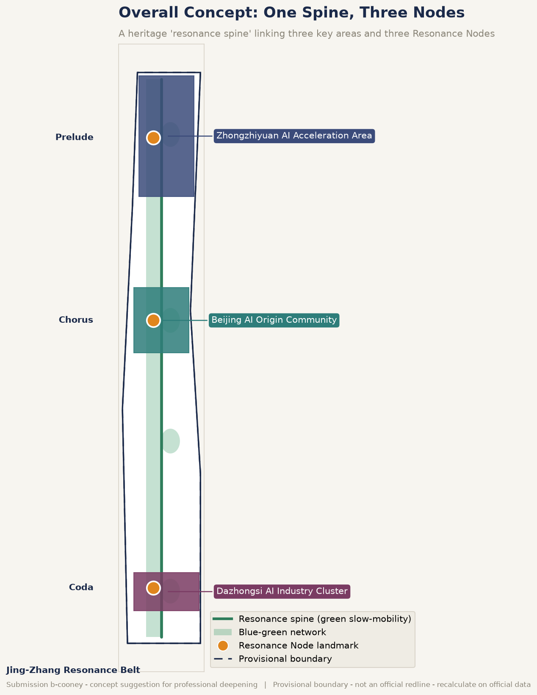
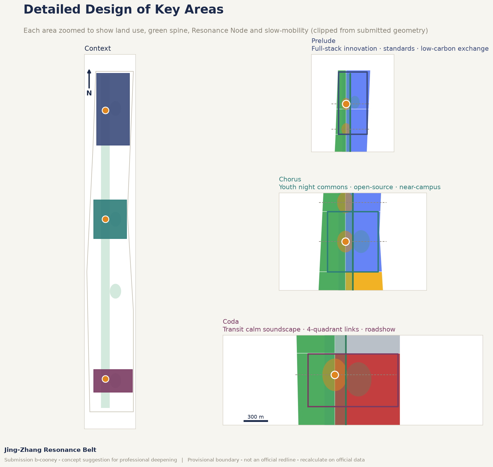
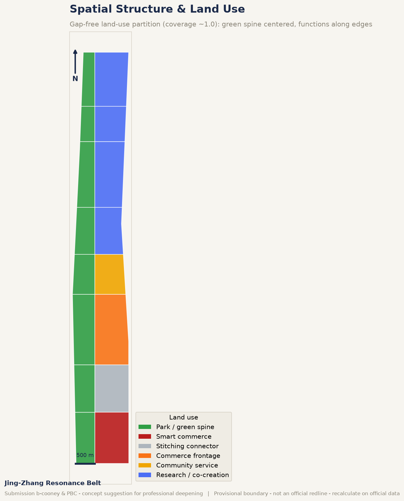
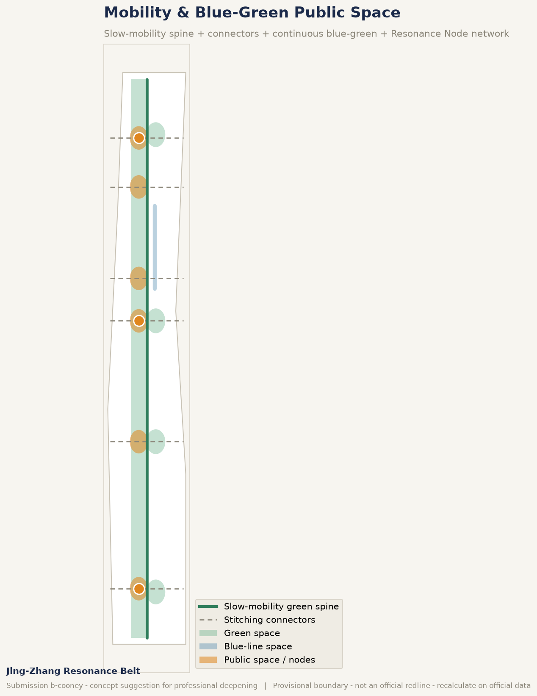
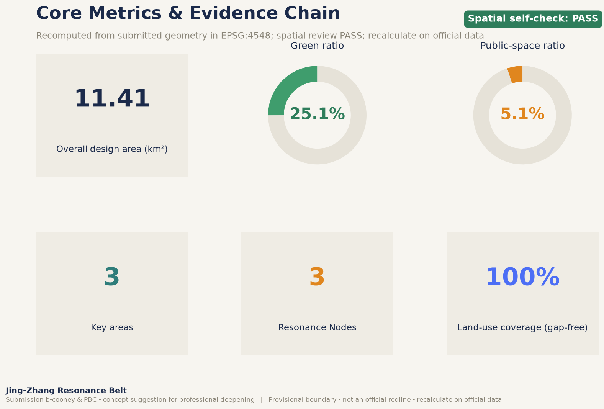

生成式自适应声景 · Live generative soundscape (offline, Web Audio)
Non-autoplay, volume-limited. Uses only non-personal aggregate signals (time/crowd) to demo adaptive generation. Move the sliders to watch the state morph slowly with context.
Current state: RESTORE —
How it works: functional-state vectors + a SENSE→INTERPRET→TARGET→COMPOSE→RENDER→ADAPT loop + recent-history suppression (guarantees no audible repetition) + a pentatonic set over a slow harmonic field.
总览地图 · Overview Map

三层范围 · Three-Level Scope
Coordinated research ~43.6 km², overall design ~11.4 km², key detailed-design ~368.4 ha (three areas).
重点区域 · Key Areas

用地分区 · Land Use

交通慢行与蓝绿公共空间 · Mobility & Blue-Green Public Space

建筑 · Buildings
Representative renewal/retained footprints are indicative; height and intensity await official regulatory conditions.
更新项目 · Renewal Projects
- JZ-01 heritage-park slow-mobility stitching
- JZ-03 Chorus resonance living room
- JZ-05 generative-soundscape facilities + edge-compute
- JZ-06 Global AI Week public route
AI 场景 · AI Scenarios
01 Chorus resonance commons02 Coda transit calm09 AI health navigation11 soundscape open-API day核心指标 · Core Metrics

任务覆盖 · Task Coverage
agent.1 ✓ agent.2 ✓ agent.3 ✓ agent.4 ✓ agent.5 ✓ agent.6 ✓
Announcement 1.3/1.4/1.5 and agent.1–6 all mapped in compliance_matrix.json.
自检状态 · Self-Check
空间复核 PASS Content validation: 0 errors; provisional-boundary notice retained.
来源 · Sources
Official announcement, agent taskbook, site package, public-source registry, soundscape health evidence (Aletta 2018 et al.), ISO 12913 framework — full list in sources.json.
假设 · Assumptions
Submitted geometry is a provisional rough boundary (provisional_constraint), not an official redline; recalculate on official data. Soundscape state→feeling mappings are site-validated design hypotheses.